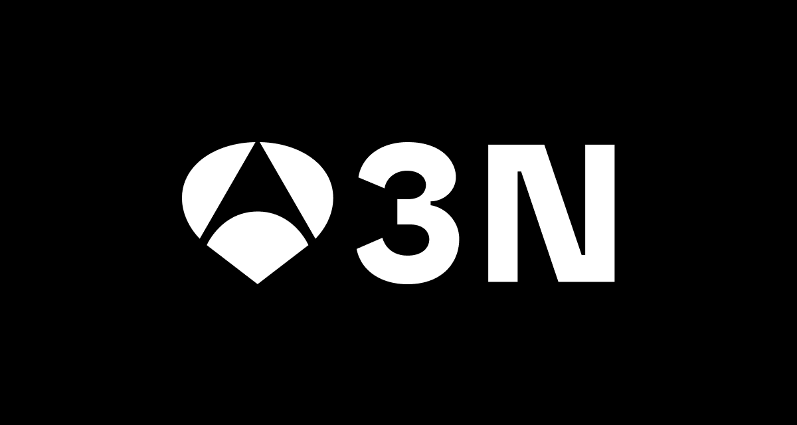
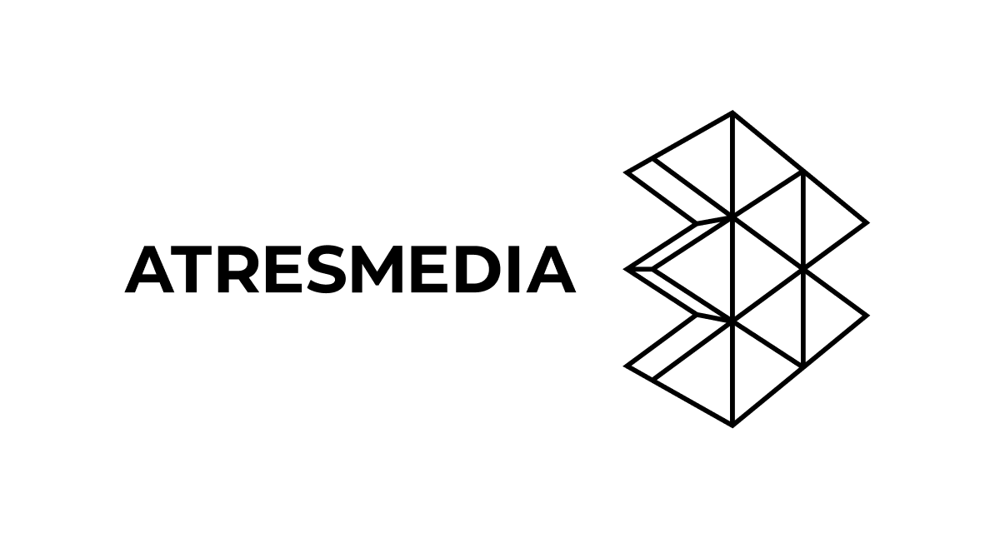
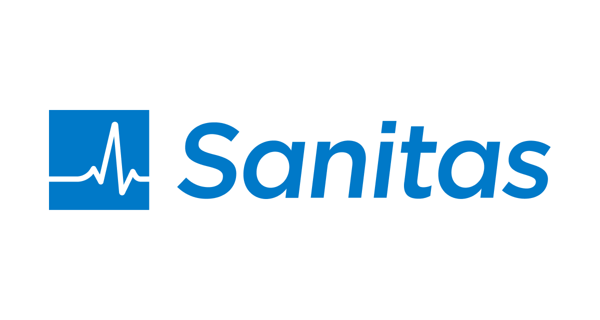
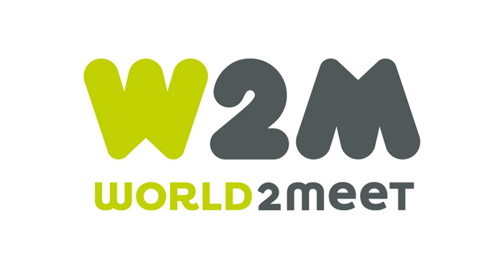
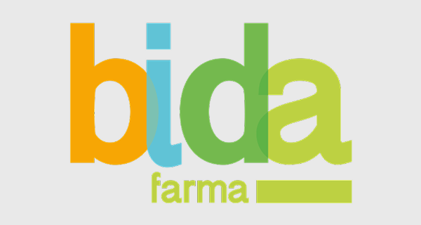
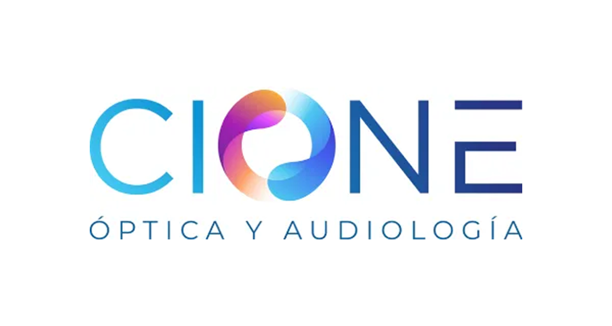
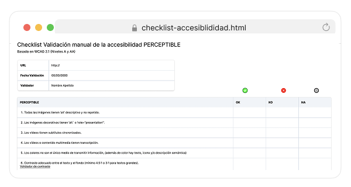

Antena 3 Noticias
Es el programa informativo de Antena 3 que lleva en emisión desde que la cadena comenzó sus emisiones regulares en 1990.
Mantenimiento del Sistema de Diseño, evolutivos, revisión de la accesibilidad segun normativa UNE. Módulos Loterías, Tu Tiempo.

Grupo Atresmedia
Research, UX, UI y Accesibilidad para las webs del grupo Atresmedia: La Sexta, OndaCero, Europa FM, La Razón. Creación de módulos de noticias, audio y vídeo, revisión y mantenimiento de listados, Revisiones de accesibilidad y contraste de color.

Sanitas En Casa Contigo
Es una de las principales compañías de salud y seguros en España, propiedad del grupo internacional Bupa. Ofrece servicios integrales que van desde seguros médicos privados hasta hospitales propios, clínicas dentales y residencias para mayores.
Diseño App mobile En Casa Contigo. Una app de apoyo para personas mayores, cuidadores y familiaries. Permite hacer el seguimiento del día a día de una persona mayor dependiente. Incluye Calendario, Chat, Vinculación con dispositivos como pulseras inteligentes, Agenda del día a día, Medicación, Horarios
Ver detalle

W2M (World2Meet)
Es la división de viajes del Grupo Iberostar, un grupo turístico vertical que ofrece servicios integrales, incluyendo banco de camas, operador vacacional, compañía aérea y receptivo.
Diseño de la App de reservas de experiencias (excursiones, restaurantes).
Ver detalle

Bidafarma
Es una de las principales cooperativas de distribución mayorista de medicamentos en España, con un capital 100% farmacéutico. Atiende diariamente a más de 10.000 farmacias en 36 provincias, posicionándose como un referente nacional en el sector.
Bidaframa Asistente de voz. Para agilizar el proceso de compra y reserva de medicamentos, se implementó un asistente de voz capaz de resolver las consultas más frecuentes del CAU. A partir del análisis y escucha de estas interacciones, se identificaron patrones comunes que sirvieron para definir los flujos conversacionales.
Además, se diseñaron el guion y la personalidad del asistente, junto con el customer journey de los casos más relevantes, asegurando una experiencia coherente, eficiente y centrada en el usuario.
Ver detalle

Cione
Cione es una cooperativa española líder en el sector de la salud visual y auditiva fundada en 1973. Funciona como una red de ópticos independientes que comparten recursos, formación y productos exclusivos.
Diseño Intranet y Plataforma B2B.
Ver detalle

Accesibilidad
Realizo auditorías de accesibilidad para proyectos digitales en distintos sectores, evaluando contraste, legibilidad y navegación para detectar barreras y proponer mejoras. Este trabajo se complementa con informes, plantillas y acciones de divulgación que ayudan a integrar la accesibilidad en el diseño y desarrollo.
Ver detalle